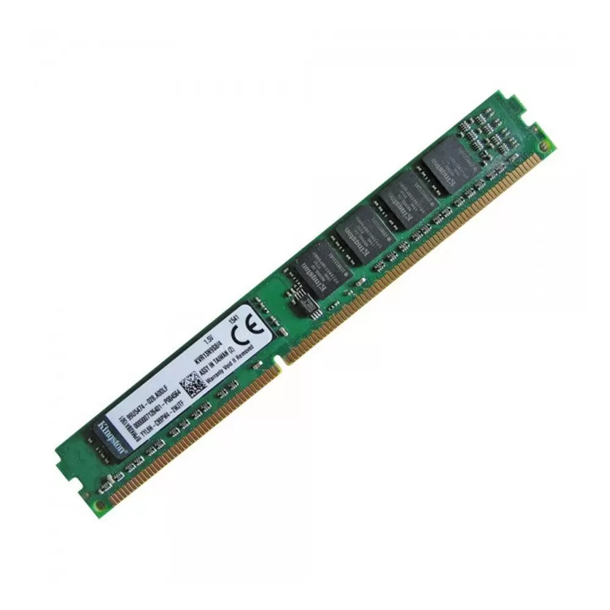

Ram

O que é a RAM em um computador?
A RAM (memória de acesso aleatório) é a memória de curto prazo de um computador, onde são armazenados os dados que o processador está usando no momento. O computador pode acessar a memória RAM muito mais rápido do que os dados em um disco rígido, SSD ou outro dispositivo de armazenamento de longo prazo, razão pela qual a capacidade de RAM é fundamental para o desempenho do sistema.
Qual o significado da sigla RAM?
RAM significa memória de acesso aleatório e é um dos elementos fundamentais da computação. A RAM é um banco de memória temporário onde o computador armazena os dados que precisa recuperar rapidamente. A RAM mantém os dados facilmente acessíveis para que seu processador possa encontrá-los rapidamente sem precisar entrar no armazenamento de longo prazo para concluir tarefas de processamento imediatas.
Todo dispositivo computacional tem uma RAM, não importa se é um desktop com Windows, macOS ou Linux; um tablet ou um smartphone (Android ou iOS); ou até mesmo um dispositivo de computação da IoT (como smart TV). Quase todos os computadores têm também uma forma de armazenar informações para acesso de longo prazo. Mas a memória necessária para executar o processo em que você está trabalhando atualmente é armazenada e acessada na RAM do seu computador.
O que a RAM faz?
A RAM é uma forma de armazenamento temporário que é apagada quando você desliga o computador. A RAM oferece acesso extremamente rápido aos dados, o que a torna ideal para os processos, aplicativos e programas em que o computador está trabalhando ativamente, como os dados necessários para navegar na internet por meio do navegador da web.
Para entender a RAM, vamos usar a analogia de uma mesa física. Seu espaço de trabalho é o topo da mesa. É onde você mantém tudo o que usa com frequência ao seu alcance, para não perder tempo procurando nas gavetas. Por outro lado, tudo que você não usa muito ou que quer guardar para mais tarde vai para uma gaveta da mesa.
No computador, a RAM é como a parte de cima da mesa, onde você mantém tudo o que precisa de acesso rápido. E os dados que você não usa muito ou quer guardar para mais tarde são armazenados em um disco rígido, seja localmente no seu dispositivo ou na nuvem.
Para que serve a RAM?
A RAM é usada para armazenamento e recuperação de dados imediatos. Sua RAM pode processar informações significativamente mais rápido que um HD, entre 20 e 100 vezes mais rapidamente, dependendo das especificações do hardware e da tarefa.
Para realizar uma tarefa específica, os sistemas operacionais dos computadores carregam dados do disco rígido na RAM para processá-los. Quando termina de trabalhar ativamente com esses dados, o computador os converte novamente em armazenamento de longo prazo.
Quando você abre um programa como o Microsoft Word, seu computador carrega o aplicativo na sua RAM. Se você abrir um documento que já salvou no seu computador, o sistema operacional localizará o arquivo no armazenamento de longo prazo e copiará as informações na memória RAM. Uma vez que os dados estão na RAM, você obtém um desempenho quase instantâneo porque ela é extremamente rápida.
Quando você salva um documento ou qualquer outro tipo de arquivo, os dados são copiados para o disco rígido ou outro armazenamento de longo prazo. E, quando você fecha um aplicativo, o sistema operacional do computador o retira de sua RAM, o que libera espaço na memória de curto prazo do computador para que você possa trabalhar no próximo projeto. Se você esquecer de salvar um documento no HD e energia cair, todo aquele trabalho foi para o espaço, pois a finalidade da memória RAM é armazenar os dados temporariamente.)
Outro uso para a RAM é ajudar seu computador a carregar mais rápido as informações acessadas anteriormente. Ao ligar seu computador e iniciar algum aplicativo, como o PowerPoint ou o Spotify, ele demora um pouco para carregar. Mas, se você fecha o programa e depois o reinicia, o software é aberto quase que instantaneamente (especialmente se o PC está com o desempenho otimizado). Isso porque os dados necessários para carregar o aplicativo são armazenados na RAM significativamente mais rápido em vez do disco rígido.
Em resumo, a memória RAM é usada para qualquer tarefa que exija acesso rápido de recursos de computação. Um recurso do Windows chamado SuperFetch ajuda a tornar esse acesso ainda mais rápido e simples, gravando os padrões de uso e pré-carregando automaticamente aplicativos e arquivos na RAM com base no comportamento.